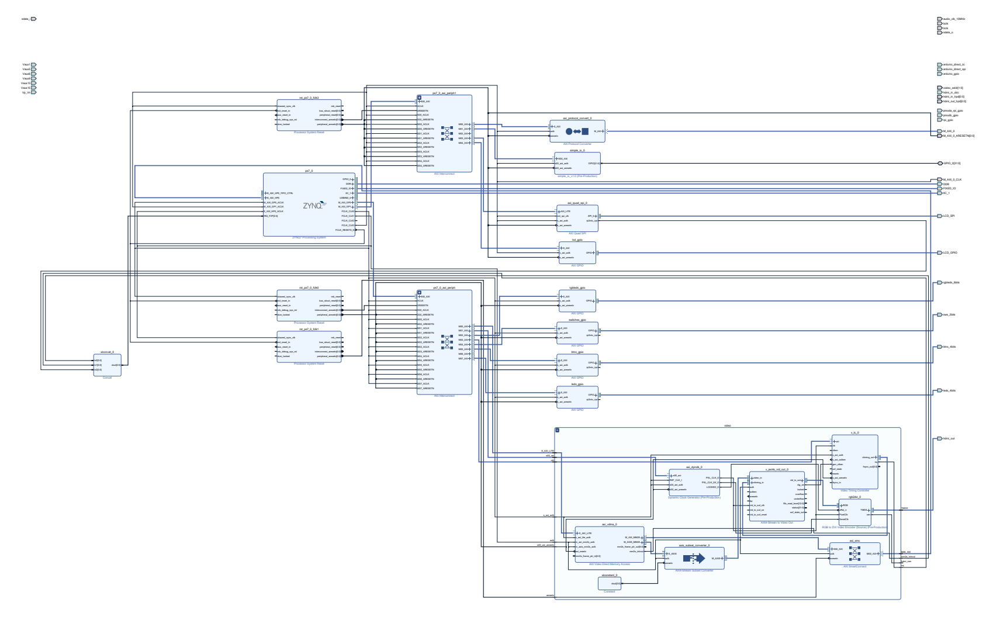
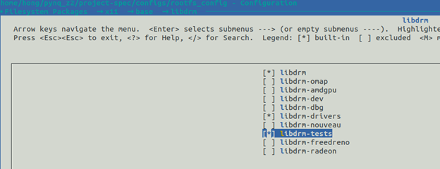
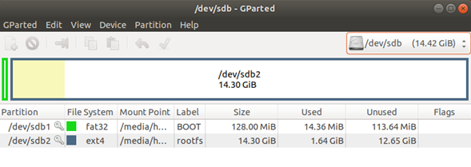
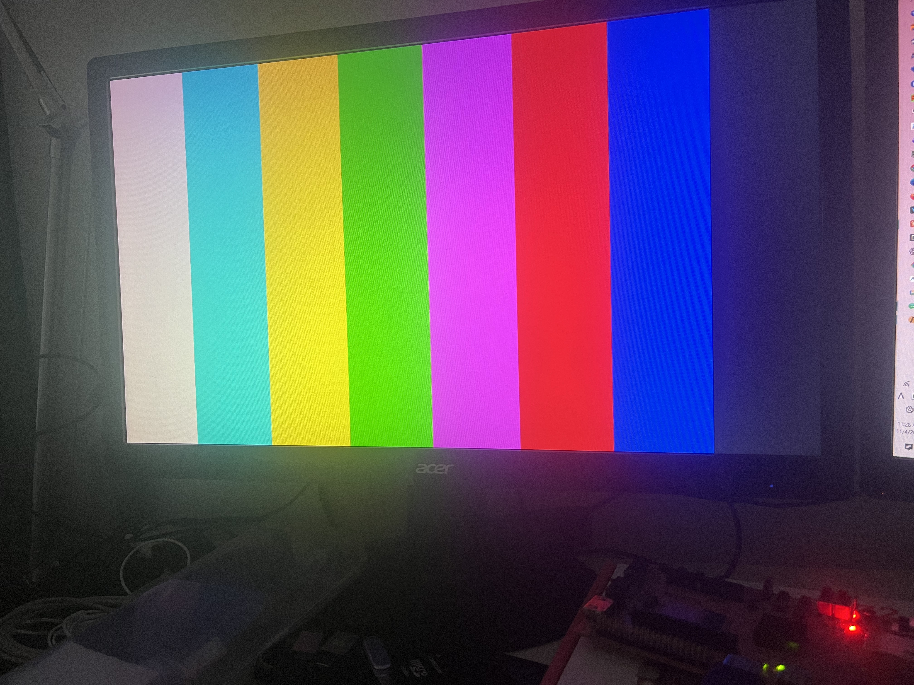
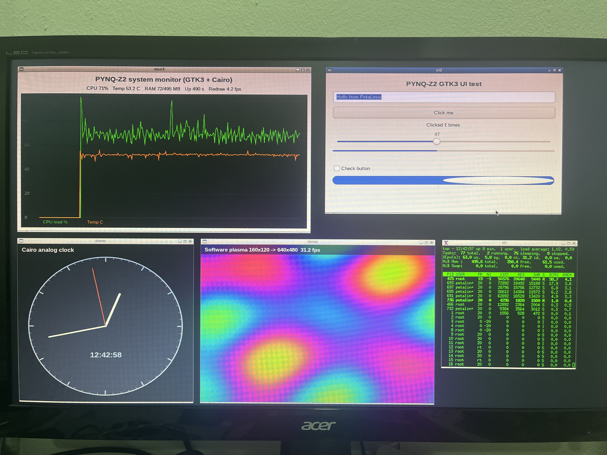

PYNQ-Z2 Video Out: ต่อภาพออกจอ HDMI ด้วย Linux DRM/KMS + Framebuffer บน PetaLinux 2022.1
1 บทนำ
บทความนี้จะมาแชร์วิธีทำให้ระบบปฏิบัติการ Linux (PetaLinux 2022.1) บนบอร์ด PYNQ-Z2 (ชิป Xilinx Zynq-7000 / XC7Z020) สามารถต่อภาพออกจอ HDMI ได้เหมือนเครื่องคอมพิวเตอร์ทั่วไปครับ โดยระบบจะมองเห็นทั้งไดรเวอร์การ์ดจอแบบมาตรฐาน /dev/dri/card0 (DRM/KMS) และจำลอง /dev/fb0 (Framebuffer) ขึ้นมาให้เราใช้งานได้ทันที
หลายคนที่เคยเล่น Zynq-7000 คงทราบดีว่าในชิปมันไม่มีฮาร์ดแวร์ GPU สำหรับประมวลผลกราฟิกติดมาด้วย แล้วเราจะเอาภาพออกจอได้ยังไง? คำตอบคือเราจะใช้ความยืดหยุ่นของฝั่ง PL (FPGA) มาสร้างเป็น Display Controller Pipeline ขึ้นมาเองเลยครับ โดยให้ตัว AXI VDMA คอยวิ่งไปดูดข้อมูลภาพจากแรม DDR3 แล้วแปลงเป็นสัญญาณ HDMI ยิงออกจอตรงๆ เลย
2 อุปกรณ์และภาพรวมการทำงาน (Overview)
2.1 สเปกและเครื่องมือที่ใช้ในการทดลอง
| รายการ | สเปก / เวอร์ชันที่ใช้ | รายละเอียด |
|---|---|---|
| บอร์ดทดลอง | PYNQ-Z2 | ชิป Zynq-7020 (XC7Z020-1CLG400C) |
| Vivado | 2022.1 | ใช้ต่อบล็อกไดอะแกรมและสังเคราะห์ฮาร์ดแวร์ฝั่ง FPGA |
| PetaLinux | 2022.1 | ตามเอกสาร Xilinx แนะนำรันบน Ubuntu 20.04.3 LTS |
| Host ที่ใช้จริง | Ubuntu 22.04 LTS | รัน PetaLinux 2022.1 ได้เหมือนกัน |
| Linux Kernel | 5.15 LTS (Digilent Rebase) | สาขา digilent_rebase_v5.15_LTS_2022.1 |
| Pixel format | RG24 = DRM_FORMAT_RGB888 |
24 bpp (3 ไบต์ต่อ 1 พิกเซล: แดง, เขียว, น้ำเงิน) |
2.2 ภาพจากโปรแกรมวิ่งไปถึงจอ HDMI ได้ยังไง? (Data Transfer Flow)
เวลาเราสั่งรันโปรแกรมบน Linux ข้อมูลภาพจะไหลผ่านฮาร์ดแวร์ตามลำดับนี้ครับ:
- แอปพลิเคชัน → แรม DDR3 (Framebuffer):
โปรแกรมใน Userspace หรือไดรเวอร์ใน Kernel จะเขียนข้อมูลสีของแต่ละพิกเซลลงในพื้นที่แรม DDR3 ซึ่งเราจองพื้นที่ส่วนนี้ไว้ล่วงหน้า - แรม DDR3 → AXI VDMA (ผ่าน AXI HP Port):
บล็อกAXI VDMAใน FPGA จะทำหน้าที่ดึงข้อมูลภาพจากแรม DDR3 อัตโนมัติผ่านพอร์ตความเร็วสูง AXI HP0 (High Performance) แบบ Memory-Mapped - AXI VDMA → วงจรแปลงสตรีม (ผ่าน AXI4-Stream):
VDMA จะเปลี่ยนรูปแบบข้อมูลจากในแรมมาเป็นสายข้อมูลต่อเนื่อง (AXI4-Stream: MM2S) ส่งต่อไปยังaxis_subset_converterและv_axi4s_vid_out - Video Out Block → ตัวเข้ารหัสสัญญาณ (
rgb2dvi):
บล็อกv_axi4s_vid_outจะเอาข้อมูลพิกเซลมาซิงค์เข้ากับจังหวะเวลา (HSync, VSync, Data Enable) ที่สร้างขึ้นจากv_tcและรับ Pixel Clock จากaxi_dynclkกลายเป็นสัญญาณภาพขนาน Parallel RGB + Sync Signals - TMDS Encoder → พอร์ต HDMI → จอภาพ:
บล็อกrgb2dviจะรับสัญญาณภาพขนานพร้อมสัญญาณนาฬิกา (Pixel Clock และ Serial Clock ความถี่ 5 เท่า) มาเข้ารหัสเป็นสัญญาณดิจิทัลแรงดันต่ำแบบต่างระดับ TMDS ยิงออกพอร์ต HDMI ของบอร์ดเข้าสู่หน้าจอครับ
graph TD
subgraph US["1. Linux Userspace"]
APP["Applications / GUI
(fbdev / DRM apps)"]
end
subgraph KS["2. Linux Kernel"]
DRM["DRM Subsystem & fbdev Emulation
(xlnx-drm + Digilent Drivers)"]
end
DDR[("DDR3 RAM
(CMA Framebuffer)")]
subgraph PL["3. PL Video Pipeline (FPGA)"]
VDMA["AXI VDMA
(ดึงภาพจากแรมเป็นสตรีม)"]
CONV["Format Converter
(axis_subset_converter)"]
VOUT["Video Out Bridge
(v_axi4s_vid_out)"]
DVI["rgb2dvi
(TMDS Encoder)"]
CTRL["Timing & Clock Blocks
(v_tc + axi_dynclk)"]
end
HDMI["4. จอภาพ HDMI Monitor"]
%% Data Flow (เส้นหนาสีส้ม)
APP ==>|"1. เขียนภาพลงบัฟเฟอร์"| DDR
DDR ==>|"2. VDMA ดึงภาพผ่าน AXI HP0"| VDMA
VDMA ==>|"3. ส่งต่อเป็น AXI4-Stream"| CONV
CONV ==>|"RGB Stream"| VOUT
VOUT ==>|"4. สัญญาณภาพขนาน RGB + Sync"| DVI
DVI ==>|"5. สัญญาณ TMDS"| HDMI
%% Control Flow (เส้นประ)
APP -.->|"mmap / ioctl"| DRM
DRM -.->|"คุม VDMA ผ่าน AXI-Lite"| VDMA
DRM -.->|"สั่งปรับ Clock และ Timing"| CTRL
CTRL -.->|"Pixel Clock & H/V Sync"| VOUT
CTRL -.->|"Serial Clock (5x)"| DVI
classDef mainData stroke:#e8590c,stroke-width:3px;
classDef ctrlFlow stroke:#888,stroke-dasharray: 3 3;
3 การออกแบบฮาร์ดแวร์ฝั่ง FPGA (Vivado)
ในส่วนของ FPGA (PL) เราจะต่อ IP Core ต่างๆ เข้าด้วยกันตามรูปด้านล่าง
อันนี้คือส่วนที่เป็น video framebuffer:
graph LR
subgraph PS["1. ฝั่งชิปประมวลผล (PS)"]
DDR[("DDR3 RAM
(Framebuffer)")]
I2C["I2C0
(อ่าน EDID จากจอ)"]
end
subgraph PL["2. ฝั่งวงจร FPGA (PL - Hierarchy: video)"]
VDMA["AXI VDMA
(axi_vdma_0)"]
CONV["Format Converter
(axis_subset_converter)"]
VOUT["Video Out Bridge
(v_axi4s_vid_out_0)"]
DVI["TMDS Encoder
(rgb2dvi_0)"]
VTC["Timing Controller
(v_tc_0)"]
DYN["Dynamic Clock
(axi_dynclk)"]
end
HDMI["3. หน้าจอ
(พอร์ต HDMI TX)"]
%% Data Flow
DDR ==>|"1. อ่านข้อมูลภาพ (AXI HP)"| VDMA
VDMA ==>|"2. AXI4-Stream"| CONV
CONV ==>|"3. จัดสายข้อมูล RGB"| VOUT
VOUT ==>|"4. Parallel RGB"| DVI
DVI ==>|"5. สัญญาณ TMDS"| HDMI
%% Control & Timing
I2C -.->|"อ่าน EDID (DDC)"| HDMI
DYN -.->|"Pixel Clock"| VTC
DYN -.->|"Pixel & 5x Serial Clock"| DVI
VTC -.->|"สัญญาณซิงค์ H/V Sync"| VOUT
classDef mainFlow stroke:#e8590c,stroke-width:3px;
classDef ctrlFlow stroke:#888,stroke-dasharray: 3 3;
ภาพรวมของทั้งโปรเจกต์จะเป็นแบบนี้:

แนะนำให้รวมบล็อกที่เกี่ยวกับระบบวิดีโอทั้งหมดไว้ใน Hierarchy ชื่อ video นะครับ เพราะเวลา PetaLinux สร้าง Device Tree มันจะเอาชื่อ Hierarchy นี้ไปตั้งชื่อ Label ให้เราอัตโนมัติ เช่น video_axi_vdma_0, video_axi_dynclk_0, video_v_tc_0 ซึ่งทำให้เราเขียนไฟล์ Device Tree ในขั้นตอนถัดไปได้ง่ายและตรงกันพอดีครับ
หน้าที่ของแต่ละตัวใน Video Pipeline:
- DDR3 RAM (Framebuffer): แรมหลักของระบบ ใช้เก็บข้อมูลพิกเซลที่โปรแกรมหรือระบบปฏิบัติการเขียนลงมา
- AXI VDMA (
axi_vdma_0): ตัวช่วยดึงข้อมูลภาพจากแรม (Direct Memory Access) ในโหมด MM2S (Memory-Mapped to Stream) เพื่อแปลงข้อมูลเป็นสายข้อมูลสตรีม AXI4-Stream - Format Converter (
axis_subset_converter): ตัวจัดระเบียบสายข้อมูลสตรีม เช่น ปรับเรียงลำดับบิตสี R, G, B หรือใช้ตัดไบต์ที่ไม่ใช้ออก (ในกรณีส่งมาแบบ 32 บิต) - Timing Controller (
v_tc_0): ตัวสร้างสัญญาณจังหวะเวลามาตรฐานของจอภาพ (Video Timing) ได้แก่ สัญญาณซิงค์แนวนอน (HSync), สัญญาณซิงค์แนวตั้ง (VSync) และ Data Enable (DE) - Dynamic Clock Generator (
axi_dynclk- IP จาก Digilent): ช่วยปรับความถี่สัญญาณนาฬิกา (Pixel Clock และ Serial Clock 5 เท่า) - Video Out Bridge (
v_axi4s_vid_out_0): ตัวแปลงสัญญาณภาพจาก AXI4-Stream ไปเป็นสัญญาณภาพแบบขนาน (Parallel RGB) โดยทำหน้าที่นำข้อมูลสีของแต่ละพิกเซลมาจับคู่เข้ากับจังหวะการกวาดหน้าจอ (HSync, VSync, Data Enable) ที่ได้จากv_tcให้ตรงตามรอบสัญญาณนาฬิกา (Pixel Clock) เพื่อเตรียมส่งต่อไปยังตัวแปลงสัญญาณ HDMI - TMDS Encoder (
rgb2dvi_0- IP จาก Digilent): ตัวแปลงสัญญาณภาพขนาน Parallel RGB ให้กลายเป็นสัญญาณดิจิทัลแรงดันต่ำแบบต่างระดับ TMDS ส่งตรงเข้าพอร์ต HDMI ของบอร์ด
4 สร้างระบบ Linux ด้วย PetaLinux 2022.1
4.1 สร้างโปรเจกต์ PetaLinux
เริ่มจากเปิดเทอร์มินัลแล้วสร้างโปรเจกต์ใหม่ จากนั้นอิมพอร์ตไฟล์ฮาร์ดแวร์ (.xsa) ที่ได้จาก Vivado เข้ามา:
source ~/petalinux_2022_1/settings.sh
cd ~/
# สร้างโปรเจกต์สำหรับชิป Zynq
petalinux-create --type project --template zynq --name pynq_z2
cd pynq_z2/
# ชี้ไปยังโฟลเดอร์ที่มีไฟล์ .xsa ของเรา
petalinux-config --get-hw-description=/home/hong/Desktop/pynq_z2/พอหน้าต่างคอนฟิกสีฟ้าขึ้นมา ให้ตั้งค่าหลักๆ 3 จุดนี้ครับ:
- DTG Settings → Kernel Bootargs
- ติ๊กเอาเครื่องหมายถูกหน้า generate boot args automatically ออก
- เลือกที่ user set kernel bootargs แล้วใส่ข้อความนี้ลงไป:
console=ttyPS0,115200 root=/dev/mmcblk0p2 rw earlyprintk quiet rootfstype=ext4 rootwait cma=256M
cma=256M?จากที่ทดลองเล่นดู ถ้าเราไม่จองหน่วยความจำแบบต่อเนื่อง (CMA) ไว้เยอะพอ เวลาโปรแกรมสั่งทำ Double Buffering ผ่าน DRM มันจะฟ้อง error ทันทีตอนสร้าง dumb buffer ครับ เพราะภาพความละเอียดสูงต้องใช้พื้นที่แรมก้อนใหญ่ที่เรียงติดกันแบบต่อเนื่องเพื่อให้ VDMA อ่านข้อมูลได้ไม่สะดุด
- Image Packaging Configuration → Root filesystem type
เลือกเป็น EXT4 (SD/eMMC/SATA/USB) - ปิดตัวเลือก Copy final images to tftpboot ออกได้เลยครับ เพราะรอบนี้เราบูตตรงผ่าน SD Card
4.2 เพิ่มไดรเวอร์ Digilent HDMI เข้าไปในเคอร์เนล
เราจะใช้ไดรเวอร์จาก Digilent (linux-digilent สาขา digilent_rebase_v5.15_LTS_2022.1) เพื่อควบคุมตัวสร้าง Clock และตัวส่งสัญญาณ HDMI:
# สร้างโครงไดรเวอร์ในโปรเจกต์
petalinux-create -t modules --name clk-dglnt-dynclk --enable
petalinux-create -t modules --name digilent-hdmi --enable
# ก๊อปปี้ไฟล์ซอร์สโค้ดไดรเวอร์เข้าไปทับ
cp ~/Desktop/pynq_z2/clk-dglnt-dynclk.c ~/pynq_z2/project-spec/meta-user/recipes-modules/clk-dglnt-dynclk/files/clk-dglnt-dynclk.c
cp ~/Desktop/pynq_z2/digilent-hdmi.c ~/pynq_z2/project-spec/meta-user/recipes-modules/digilent-hdmi/files/digilent-hdmi.cไฟล์ไดรเวอร์ต้นฉบับสามารถดาวน์โหลดได้จาก GitHub ของ Digilent ครับ:
| ชื่อไดรเวอร์ | หน้าที่การทำงาน |
|---|---|
clk-dglnt-dynclk |
ไดรเวอร์ Common Clock Framework ทำหน้าที่คุยกับ axi_dynclk ผ่าน DRP เพื่อสั่งปรับความถี่ Pixel Clock ตามความละเอียดจอ |
digilent-hdmi |
ไดรเวอร์ DRM Encoder/Connector สำหรับ HDMI ทำหน้าที่อ่านค่า EDID ผ่านบัส I2C0 เพื่อเช็กว่าจอรองรับโหมดไหนบ้าง แล้วสั่งตั้งค่า Clock ให้อัตโนมัติ |
4.3 แก้ไข Device Tree (system-user.dtsi)
เปิดไฟล์ project-spec/meta-user/recipes-bsp/device-tree/files/system-user.dtsi แล้วใส่โค้ดชุดนี้ลงไป เพื่อบอกให้ Linux รู้จักฮาร์ดแวร์จอภาพที่เราต่อไว้ในฝั่ง FPGA:
/include/ "system-conf.dtsi"
#include <dt-bindings/gpio/gpio.h>
/* เปิดบัส I2C0 เพื่อให้อ่านค่า EDID จากจอภาพผ่านสาย HDMI ได้ */
&i2c0 {
clock-frequency = <100000>;
status = "okay";
};
&amba_pl {
/* ตัวแปลงสัญญาณ HDMI ฝั่ง DRM */
digilent_hdmi {
compatible = "digilent,hdmi";
clocks = <&video_axi_dynclk_0>;
clock-names = "clk";
digilent,edid-i2c = <&i2c0>;
digilent,fmax = <142000>;
port@0 {
hdmi_ep: endpoint {
remote-endpoint = <&pl_disp_ep>;
};
};
};
/* ไดรเวอร์คุมการแสดงผลของฝั่ง PL (DRM Controller) */
xlnx_pl_disp {
compatible = "xlnx,pl-disp";
dmas = <&video_axi_vdma_0 0>;
dma-names = "dma0";
xlnx,vformat = "RG24"; /* ถ้าใช้ XRGB8888 32 bpp ให้เปลี่ยนเป็น "XR24" */
xlnx,bridge = <&video_v_tc_0>;
port@0 {
pl_disp_ep: endpoint {
remote-endpoint = <&hdmi_ep>;
};
};
};
};
/* กำหนดช่วง Address ให้กับ VDMA */
&video_axi_vdma_0 {
dma-ranges = <0x00000000 0x00000000 0x40000000>;
};
/* ไดรเวอร์ตัวสร้าง Dynamic Clock */
&video_axi_dynclk_0 {
compatible = "dglnt,axi-dynclk";
#clock-cells = <0>;
clocks = <&clkc 15>;
};
/* บริดจ์เชื่อมต่อ Timing Controller เข้ากับระบบ DRM */
&video_v_tc_0 {
compatible = "xlnx,bridge-v-tc-6.1";
xlnx,pixels-per-clock = <1>;
};สังเกตชื่อ Label อย่าง video_axi_vdma_0, video_axi_dynclk_0, video_v_tc_0 มันจะขึ้นต้นด้วย video_ ตามชื่อ Hierarchy ที่เราตั้งไว้ใน Vivado เสมอครับ ถ้าใครตั้งชื่ออื่นไว้ อย่าลืมมาแก้ตรงนี้ให้ตรงกันด้วยนะ
4.4 ตั้งค่าคอนฟิกเคอร์เนล (bsp.cfg)
เปิดไฟล์ project-spec/meta-user/recipes-kernel/linux/linux-xlnx/bsp.cfg แล้วเพิ่มบรรทัดเหล่านี้ลงไป เพื่อเปิดใช้งานระบบ DRM และ Framebuffer:
| ตัวเลือกคอนฟิก | ความสำคัญ |
|---|---|
CONFIG_COMMON_CLK_DGLNT_DYNCLK=y |
เปิดไดรเวอร์นาฬิกาของ Digilent |
CONFIG_DRM_XLNX_BRIDGE=yCONFIG_DRM_XLNX_BRIDGE_VTC=y |
เปิดใช้งาน Xilinx DRM Bridge และ VTC |
CONFIG_DRM_XLNX_PL_DISP=y |
ไดรเวอร์หลักที่คุม Display ในฝั่ง PL (xlnx_pl_disp) |
CONFIG_DRM_DIGILENT_HDMI=y |
ไดรเวอร์ HDMI Encoder ของ Digilent |
CONFIG_DRM_FBDEV_EMULATION=y |
สั่งให้ระบบจำลอง /dev/fb0 ขึ้นมาบน DRM |
CONFIG_DRM_FBDEV_OVERALLOC=100 |
จองขนาดเฟรมบัฟเฟอร์เผื่อไว้เป็น 2 เท่าความสูงจริง ทำให้ทำ Double Buffering / สลับหน้าจอได้ลื่นๆ |
CONFIG_FB=yCONFIG_FB_CFB_*=yCONFIG_FB_SYS_*=yCONFIG_FB_DEFERRED_IO=y |
ฟังก์ชันพื้นฐานของระบบ Framebuffer |
CONFIG_FRAMEBUFFER_CONSOLE=yCONFIG_FONT_8x8=yCONFIG_FONT_8x16=y |
แสดงผล Terminal Console และโลโก้เพนกวิน Tux ขึ้นจอได้ทันทีตอนบูต |
CONFIG_I2C_XILINX=y |
เปิดบัส I2C เพื่อใช้อ่านข้อมูล EDID จากจอ |
4.5 เปิดแพ็กเกจทดสอบใน Rootfs
เปิดเมนูคอนฟิก Rootfs:
petalinux-config -c rootfsเข้าไปที่หมวด Filesystem Packages → x11 → base แล้วเลือกเปิดแพ็กเกจเหล่านี้:
libdrmlibdrm-driverslibdrm-tests(จะมีคำสั่งเด็ดๆ อย่างmodetestเอาไว้เช็กจอ)

สั่งประมวลผลคอนฟิกแล้วลองเช็กความถูกต้องดูครับ:
petalinux-build -c rootfs -x configure
# เช็กดูว่าติด =y ครบไหม
grep -nE '^CONFIG_(libdrm|libdrm-drivers|libdrm-tests|clk-dglnt-dynclk|digilent-hdmi)=' project-spec/configs/rootfs_configถ้าคอนฟิกถูกต้อง ทุกบรรทัดต้องขึ้นเป็น =y ครบถ้วนครับ:
CONFIG_libdrm=y
CONFIG_libdrm-drivers=y
CONFIG_libdrm-tests=y
CONFIG_clk-dglnt-dynclk=y
CONFIG_digilent-hdmi=y4.6 สั่ง Build และรวมไฟล์บูต
สั่งคอมไพล์โปรเจกต์และรวมเป็นไฟล์ BOOT.BIN:
# คอมไพล์ระบบทั้งหมด
petalinux-build
# แพ็กรวม FSBL, Bitstream (.bit) และ U-Boot ให้เป็น BOOT.BIN ก้อนเดียว
petalinux-package --boot --force \
--fsbl images/linux/zynq_fsbl.elf \
--fpga images/linux/*.bit \
--u-boot4.7 ทำ SD Card บูตระบบ
ใช้โปรแกรม gparted แบ่ง SD Card ออกเป็น 2 พาร์ติชันง่ายๆ ตามนี้ครับ:
| พาร์ติชัน | ขนาด | ฟอร์แมต | ชื่อ Label | ไฟล์ที่ใส่ |
|---|---|---|---|---|
| พาร์ติชัน 1 | ~128 MB | FAT32 | BOOT |
BOOT.BIN, image.ub, boot.scr |
| พาร์ติชัน 2 | พื้นที่ที่เหลือ | ext4 | rootfs |
แตกไฟล์ rootfs.tar.gz ลงไป |

จัดการเมานต์และก๊อปปี้ไฟล์ลงการ์ด:
# สร้างโฟลเดอร์สำหรับเมานต์
sudo mkdir -p /mnt/sdb1 /mnt/sdb2
# ก๊อปปี้ไฟล์บูตลงพาร์ติชันที่ 1
sudo mount /dev/sdb1 /mnt/sdb1
cd ~/pynq_z2/images/linux/
sudo cp BOOT.BIN image.ub boot.scr /mnt/sdb1/
sync
sudo umount /mnt/sdb1
# แตกไฟล์ Rootfs ลงพาร์ติชันที่ 2
sudo mount /dev/sdb2 /mnt/sdb2
sudo tar xzf rootfs.tar.gz -C /mnt/sdb2/
sync
sudo umount /mnt/sdb25 รันจริงบนบอร์ด PYNQ-Z2
- เลื่อนสวิตช์จัมเปอร์บนบอร์ด (JP1) ไปที่ตำแหน่ง SD เพื่อให้บูตจากการ์ด
- เสียบสาย HDMI จากบอร์ดเข้าหน้าจอคอมพิวเตอร์
- เสียบสาย Micro-USB เข้าคอมพิวเตอร์เพื่อเปิดหน้าต่าง Serial Console (Baudrate 115200)
- เปิดสวิตช์ไฟ Power บนบอร์ด
พอบูตเสร็จแล้ว ให้ล็อกอินด้วยผู้ใช้ petalinux (ในการเข้าสู่ระบบครั้งแรก ระบบจะบังคับให้เราตั้งรหัสผ่านใหม่):
pynq_z2 login: petalinux
You are required to change your password immediately (administrator enforced).
New password:
Retype new password:5.1 เช็กดูว่าการ์ดจอ DRM ขึ้นไหม
ลองพิมพ์คำสั่งตรวจดูว่าไดรเวอร์ DRM ทำงานเรียบร้อยไหม:
# ตรวจสอบ Device Node ของ DRM
pynq_z2:~$ ls -l /dev/dri/
drwxr-xr-x 2 root root 60 Jan 1 1970 by-path
crw-rw---- 1 root video 226, 0 Jan 1 1970 card0
# ตรวจสอบว่า Kernel Module โหลดขึ้นมาครบไหม
pynq_z2:~$ lsmod
digilent_hdmi 16384 0 - Live 0x00000000 (O)
clk_dglnt_dynclk 16384 1 - Live 0x00000000 (O)
# ดูข้อความ Log ตอนเคอร์เนลตรวจจับฮาร์ดแวร์
pynq_z2:~$ dmesg | grep -Ei 'drm|hdmi|v_dma|v_tc|dynclk'
platform amba_pl:xlnx_pl_disp: Fixing up cyclic dependency with amba_pl:digilent_hdmi
xlnx,bridge-vtc 43c10000.v_tc: vtc ppc = 1
xlnx,bridge-vtc 43c10000.v_tc: Xilinx VTC IP version : 0x0602000c
xlnx,bridge-vtc 43c10000.v_tc: Xilinx VTC DRM Bridge driver probed
clk_dglnt_dynclk: loading out-of-tree module taints kernel.
xlnx-drm xlnx-drm.0: bound amba_pl:xlnx_pl_disp (ops 0xc083df10)
xlnx-drm xlnx-drm.0: bound amba_pl:digilent_hdmi (ops digilent_hdmi_component_ops [digilent_hdmi])
xlnx-pl-disp amba_pl:xlnx_pl_disp: [drm] fb0: xlnxdrmfb frame buffer device
[drm] Initialized xlnx 1.0.0 20130509 for amba_pl:xlnx_pl_disp on minor 0เห็นข้อความ bound amba_pl:digilent_hdmi กับ fb0: xlnxdrmfb frame buffer device แสดงว่าระบบ DRM เชื่อมต่อกับฮาร์ดแวร์และสร้างจอเสมือนขึ้นมาเรียบร้อยแล้ว
5.2 เช็กข้อมูลของ Framebuffer (/dev/fb0)
# ดูชื่อไดรเวอร์
pynq_z2:~$ cat /sys/class/graphics/fb0/name
xlnxdrmfb
# ดูขนาดความละเอียดหน้าจอ (กว้าง, สูงเสมือน)
pynq_z2:~$ cat /sys/class/graphics/fb0/virtual_size
1680,2100
# ดูจำนวนบิตต่อพิกเซล
pynq_z2:~$ cat /sys/class/graphics/fb0/bits_per_pixel
24
# ดูขนาดของ 1 แถวพิกเซล (หน่วยเป็นไบต์)
pynq_z2:~$ cat /sys/class/graphics/fb0/stride
5040
# ตรวจสอบ Device Node ของ fbdev
pynq_z2:~$ ls -l /dev/fb0
crw-rw---- 1 root video 29, 0 Jan 1 1970 /dev/fb0virtual_size = 1680,2100: ความละเอียดจริงของจอภาพที่ใช้อยู่คือ 1680 × 1050 พิกเซล แต่สังเกตว่าความสูงมันขึ้นเป็น 2100 พิกเซล (เป็น 2 เท่า) เพราะเราใส่คอนฟิกCONFIG_DRM_FBDEV_OVERALLOC=100ไว้ ทำให้มีเนื้อที่เหลือเฟือสำหรับสลับหน้าจอ (Double Buffering)bits_per_pixel = 24: ตรงตามฟอร์แมตRG24/DRM_FORMAT_RGB888(ใช้ 3 ไบต์ต่อ 1 จุดสี)stride = 5040: คำนวณจาก 1680 พิกเซล × 3 ไบต์ = 5,040 ไบต์ต่อบรรทัดนั่นเองครับ
6 ทดสอบวาดหน้าจอ (วาดแถบสี)
6.1 เตรียม SDK เพื่อใช้คอมไพล์โปรแกรม
ก่อนจะเขียนโปรแกรมภาษา C เรามาติดตั้ง PetaLinux SDK ฝั่งเครื่องคอมฯ ของเราก่อนครับ:
| รายการ | ตัวอย่างตำแหน่งโฟลเดอร์ |
|---|---|
| โปรเจกต์ PetaLinux | ~/pynq_z2 |
| ไฟล์ติดตั้ง SDK | ~/pynq_z2/images/linux/sdk.sh |
| โฟลเดอร์ติดตั้ง SDK | ~/Desktop/pynq_z2/sdk |
source ~/petalinux_2022_1/settings.sh
cd ~/pynq_z2
# สร้าง SDK
petalinux-build --sdk
# ติดตั้ง SDK ลงในโฟลเดอร์ที่เราต้องการ
chmod +x images/linux/sdk.sh
./images/linux/sdk.sh -d "$HOME/Desktop/pynq_z2/sdk"6.2 เขียนโค้ดและคอมไพล์โปรแกรม
จัดโครงสร้างไฟล์ในโปรเจกต์ง่ายๆ แบบนี้:
~/Desktop/pynq_z2/
├── sdk/
│ └── environment-setup-cortexa9t2hf-neon-xilinx-linux-gnueabi
└── hdmi_test/
└── colorbar/
├── colorbar.c
└── Makefile6.3 ซอร์สโค้ด colorbar.c
โปรแกรมนี้จะวาดแถบสี (Color Bar) ลงใน /dev/fb0 โดยตรงเพื่อทดสอบการแสดงผลครับ:
#include <stdio.h>
#include <stdint.h>
#include <stdlib.h>
#include <fcntl.h>
#include <unistd.h>
#include <sys/mman.h>
#include <sys/ioctl.h>
#include <linux/fb.h>
/* ฟังก์ชันช่วยคำนวณและหยอดค่าสี R, G, B ลงในพิกเซลตาม Bit Offset ของจอ */
static void write_pixel(unsigned char *p,
const struct fb_var_screeninfo *v,
uint8_t r, uint8_t g, uint8_t b)
{
uint32_t pixel = 0;
pixel |= ((uint32_t)(r >> (8 - v->red.length))) << v->red.offset;
pixel |= ((uint32_t)(g >> (8 - v->green.length))) << v->green.offset;
pixel |= ((uint32_t)(b >> (8 - v->blue.length))) << v->blue.offset;
unsigned int bytes = v->bits_per_pixel / 8;
for (unsigned int i = 0; i < bytes; ++i)
p[i] = (pixel >> (8 * i)) & 0xFF;
}
int main(void)
{
int fd = open("/dev/fb0", O_RDWR);
if (fd < 0) {
perror("เปิด /dev/fb0 ไม่สำเร็จ");
return 1;
}
struct fb_var_screeninfo v;
struct fb_fix_screeninfo f;
/* ดึงข้อมูลความละเอียดและการตั้งค่าของ Framebuffer */
if (ioctl(fd, FBIOGET_VSCREENINFO, &v) < 0 ||
ioctl(fd, FBIOGET_FSCREENINFO, &f) < 0) {
perror("อ่านข้อมูล framebuffer ioctl ผิดพลาด");
close(fd);
return 1;
}
printf("ความละเอียดจอภาพ: %u x %u\n", v.xres, v.yres);
printf("BPP: %u, Stride: %u bytes, ขนาดหน่วยความจำ: %u bytes\n",
v.bits_per_pixel, f.line_length, f.smem_len);
printf("ตำแหน่งบิตสี RGB: R=%u, G=%u, B=%u\n",
v.red.offset, v.green.offset, v.blue.offset);
if (v.bits_per_pixel != 24 && v.bits_per_pixel != 32) {
fprintf(stderr, "ไม่รองรับ bpp ขนาด: %u (รองรับเฉพาะ 24 หรือ 32 bpp)\n", v.bits_per_pixel);
close(fd);
return 1;
}
if (v.red.length == 0 || v.green.length == 0 || v.blue.length == 0 ||
v.red.length > 8 || v.green.length > 8 || v.blue.length > 8 ||
v.red.offset + v.red.length > v.bits_per_pixel ||
v.green.offset + v.green.length > v.bits_per_pixel ||
v.blue.offset + v.blue.length > v.bits_per_pixel) {
fprintf(stderr, "โครงสร้างการจัดเรียงบิตสี RGB ไม่ถูกต้อง\n");
close(fd);
return 1;
}
/* ทำ Memory Mapping แรมของจอภาพเข้ามาใช้งานในโปรแกรม */
unsigned char *fb = mmap(NULL, f.smem_len,
PROT_READ | PROT_WRITE,
MAP_SHARED, fd, 0);
if (fb == MAP_FAILED) {
perror("mmap ไม่สำเร็จ");
close(fd);
return 1;
}
/* ตารางค่าสีมาตรฐาน 8 แถบ */
static const uint8_t rgb[8][3] = {
{255, 255, 255}, /* ขาว */
{ 0, 255, 255}, /* ฟ้า (Cyan) */
{255, 255, 0}, /* เหลือง */
{ 0, 255, 0}, /* เขียว */
{255, 0, 255}, /* ม่วงแดง (Magenta) */
{255, 0, 0}, /* แดง */
{ 0, 0, 255}, /* น้ำเงิน */
{ 0, 0, 0} /* ดำ */
};
unsigned int bytes_per_pixel = v.bits_per_pixel / 8;
/* วาดแถบสีทีละพิกเซลลงบนหน้าจอ */
for (unsigned int y = 0; y < v.yres; ++y) {
for (unsigned int x = 0; x < v.xres; ++x) {
unsigned int bar = (x * 8U) / v.xres;
size_t offset = (size_t)y * f.line_length
+ (size_t)x * bytes_per_pixel;
if (offset + bytes_per_pixel > f.smem_len)
continue;
write_pixel(fb + offset, &v,
rgb[bar][0], rgb[bar][1], rgb[bar][2]);
}
}
printf("วาดแถบสี Color Bars สำเร็จเรียบร้อย!\n");
munmap(fb, f.smem_len);
close(fd);
return 0;
}6.4 ไฟล์ Makefile
TARGET := colorbar
SRCS := colorbar.c
OBJS := $(SRCS:.c=.o)
CC ?= $(CROSS_COMPILE)gcc
CFLAGS ?= -O2 -Wall -Wextra
LDFLAGS ?=
.PHONY: all clean
all: $(TARGET)
$(TARGET): $(OBJS)
$(CC) $(LDFLAGS) -o $@ $^
%.o: %.c
$(CC) $(CFLAGS) -c -o $@ $<
clean:
rm -f $(TARGET) $(OBJS)6.5 สั่งคอมไพล์และทดสอบรัน:
# โหลด Environment ของ SDK
source ~/Desktop/pynq_z2/sdk/environment-setup-cortexa9t2hf-neon-xilinx-linux-gnueabi
# คอมไพล์โปรแกรม
cd ~/Desktop/pynq_z2/hdmi_test/colorbar
make clean && make
# ส่งไฟล์ไปยังบอร์ด PYNQ-Z2
scp colorbar petalinux@<IP_ของบอร์ด>:~
# รันโปรแกรมบนบอร์ด
pynq_z2:~$ sudo ./colorbarผลลัพธ์หน้าจอออกมาสวยงามตามรูปเลยครับ:

7 ทดสอบเปลี่ยนจาก RGB888 มาเป็น XRGB8888
ตอนแรกผมเริ่มทำระบบด้วยฟอร์แมต RGB888 (24 bpp) ซึ่ง 1 จุดสีจะใช้ข้อมูล 24 บิต (3 ไบต์) พอดีกับสตรีมของ VDMA แต่พอเอาไปลองใช้กับซอฟต์แวร์ฝั่ง Linux โดยเฉพาะตัวจัดการหน้าต่างอย่าง X11 / Xorg Window Server, ไลบรารีกราฟิกอย่าง SDL หรือ LVGL กลับพบว่าโปรแกรมพวกนี้ทำงานกับ XRGB8888 (32 bpp) ได้เนียนดีกว่า (บางอันไม่ support RGB888) เลยลองมาทำแบบ XRGB8888
| จุดที่แตกต่าง | แบบเดิม: RGB888 (24 bpp) | แบบใหม่: XRGB8888 (32 bpp) |
|---|---|---|
xlnx,vformat ใน Device Tree |
"RG24" |
"XR24" |
| สตรีมข้อมูลจาก VDMA | 24 บิต (3 ไบต์: R, G, B) | 32 บิต (4 ไบต์: X, R, G, B) |
หน้าที่ของ axis_subset_converter |
แค่จัดลำดับไบต์สี | ตัดไบต์ที่ไม่ใช้ออก (ทิ้งไบต์ X ไป) เพื่อลดข้อมูลจาก 4 ไบต์เหลือ 3 ไบต์ (24 บิต) ก่อนส่งให้ตัวสร้างสัญญาณจอ |
| ความเข้ากันได้กับแอปพลิเคชัน | เหมาะกับเฟรมบัฟเฟอร์ทั่วไปที่อยากประหยัดแรม | เหมาะที่สุดสำหรับ X11 Desktop, GUI Toolkits และโปรแกรมกราฟิกทั่วไป |
หน้าจอ Desktop ของ X11 รันออกจอได้สบายๆ:

8 สรุปภาพรวม
ถึงแม้ชิป Zynq-7000 บนบอร์ด PYNQ-Z2 จะไม่มีชิปการ์ดจอแยก (GPU) ติดมาให้ แต่ด้วยความยืดหยุ่นของวงจร FPGA เราก็สามารถสร้างการ์ดจอ (แบบ simple) HDMI ขึ้นมาใช้งานร่วมกับระบบ Linux DRM/KMS และ Framebuffer ได้
8.1 ข้อสังเกต
- เรื่องความเร็วในการวาดภาพ: เนื่องจากการวาดภาพกราฟิกทั้งหมดเป็นแบบ Software Rendering โดยอาศัยซีพียู ARM Cortex-A9 สองคอร์ช่วยกันคิด ดังนั้นถ้าเอาไปเล่นเกม 3D หนักๆ คงไม่ไหวแน่ๆ แต่ถ้าเอามาทำหน้าจอ Dashboard แสดงผลข้อมูลเซนเซอร์, หน้าจอควบคุมอุตสาหกรรม (HMI), รัน GUI น้ำหนักเบา หรือใช้ร่วมกับไลบรารีอย่าง LVGL น่าจะพอไหวอยู่ (ยังไม่ได้ลอง)
- แบนด์วิดท์ของแรม: เวลาต่อจอความละเอียดสูงๆ (เช่น 1080p) ตัว VDMA จะต้องวิ่งไปดึงข้อมูลจากแรม DDR3 อยู่ตลอดเวลาผ่าน AXI HP0 ดังนั้นการใช้งานจริงอาจจะต้องเผื่อแบนด์วิดท์ไว้สำหรับงานประมวลผลอื่นๆ ด้วย
8.2 ซอร์สโค้ดและเนื้อหาเพิ่มเติม
สามารถเข้าไปดาวน์โหลดไฟล์ Vivado Block Design และโค้ดทั้งหมดได้ที่ GitHub Repository:
https://github.com/wichayen/pynq_z2/tree/main/video